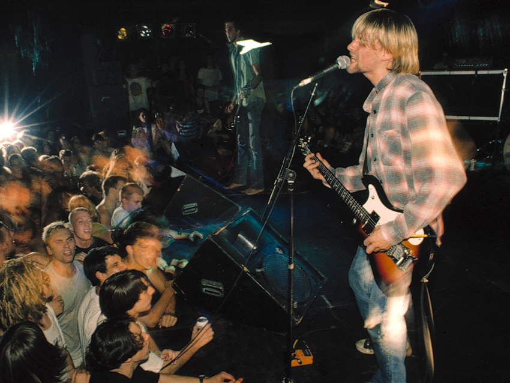

About Me
Hello, my name is Jawsef Joseph Pedroza. I am a Junior at Cal Poly Pomona, studying
computer science. My favorite color is red, and I am excited to make my first website and to be enrolled
in CS2260. So far in my career, I have learned mostly Java. I was going to do Linux(cs2600) but the
professor was not it.
However, just because I am a computer science major doesn't mean I am in my
room all day being a gremlin. I have interests and hobbies, this website is to show them to you!
Hobbies
I have multiple hobbies. I like to go for walks, play video games, listen to music, talk to my dog, Mason the Dog, and hang out with friends to do anything besides rot in my room all day.
Video Games:
I am a huge advocate for gaming, and some of my favorite games that I play and would recommend are:
- Star Wars: The Force Awakens - This game has a fundamental freedom and, to me, it is the best Star Wars game where you play as a powerful Sith and have full control of the force.
- Skate 3 - I am really into skate culture, and this game brings a lot of it from design to skateable maps, fun arcade style of unrealistic skating but realistic in the sense where you have to flip your joystick to do a trick instead of buttons. One of the best soundtracks and playlists of all time to a point where I put myself onto multiple artists like Pixies and Joy Division.
- Halo Combat Evolved - This is my favorite game of all time. I have played it around 20 times already and one of the first games I have ever played, the story, combat, level design, soundtrack to how the enemies interact with the world and your play style is different from anything I have ever played. To me, this game is a masterpiece and my childhood.
- Red Dead Redemption 2 - One of the few games I have cried to and been so engaged from the characters long. It's such a beautiful and visually stunning game. The NPCs are all unique, and the map is so big that you can get lost doing side missions or your own thing.
- Resident Evil 4 - With its over-the-shoulder camera and precision aiming, Resident Evil 4 revolutionized not only survival horror but the shooter genre as a whole.
My Music Taste
Why I am so into music
Mostly when it comes to music I am into grunge, nu metal, hip-hop/rap, Jazz, shoegaze. To me music is a form of poetry and shouldn't always be interpreted about what the musician is talking about but how they feel. To me music is a way to leave the world and join a fantasy for relaxation and to feel vulnerable but not judge. Artists like Nirvana, Joy Division, Kanye West, Kid Cudi, Soundgarden help shape the way I dress, act and express myself.
My Favorite Albums and favorite Song and there Artists
| Albums + Song | Artist(s) |
|---|---|
| Album: KIDS SEE GHOST, Song: Reborn | KIDS SEE GHOST |
| Album: Nevermind, Song: Territorial Pissings | Nirvana |
| Album: Superunknown Song: Kickstand | Soundgarden |
| Album: Either/Or, Song: Speed Trials | Elliot Smith |
| Album: Disintegration Song: Disintegration | The Cure |
Territorial Pissings preformed by Nirvna
Nirvana was an American rock band formed in Aberdeen, Washington, in 1987. Founded by lead singer and guitarist Kurt Cobain and bassist Krist Novoselic, the band went through a succession of drummers, most notably Chad Channing, before recruiting Dave Grohl in 1990.
Nirvana's success popularized alternative rock, and they were often referenced as the figurehead band of Generation X. Their music maintains a popular following and continues to influence modern rock culture.
In the late 1980s, Nirvana established itself as part of the Seattle grunge scene, releasing its first album, Bleach, for the independent record label Sub Pop in 1989. They developed a sound that relied on dynamic contrasts, often between quiet verses and loud, heavy choruses. After signing to the major label DGC Records in 1991, Nirvana found unexpected mainstream success with "Smells Like Teen Spirit", the first single from their landmark second album Nevermind (1991). A cultural phenomenon of the 1990s, Nevermind was certified Diamond by the RIAA and is credited for ending the dominance of hair metal.
Characterized by their punk aesthetic, Nirvana's fusion of pop melodies with noise, combined with their themes of abjection and social alienation, brought them global popularity. Following extensive tours and the 1992 compilation album Incesticide and EP Hormoaning, the band released their highly anticipated third studio album, In Utero (1993). The album topped both the US and UK album charts, and was acclaimed by critics. Nirvana disbanded following Cobain's suicide in April 1994. Further releases have been overseen by Novoselic, Grohl, and Cobain's widow, Courtney Love. The live album MTV Unplugged in New York (1994) won Best Alternative Music Performance at the 1996 Grammy Awards.
For legal reasons, I obtained this song legally.
Favotite Poem
In nattle, in forest, at the precipice in the moutains,
On the dark great sea, in the midst of javelins and arrows,
In sleep, in confusion, in the depths of shame,
The good deeds a man has done before defend him.
Congratulations!
Thank you for taking the time viewing my website, for that here is a botton of motivation! :)